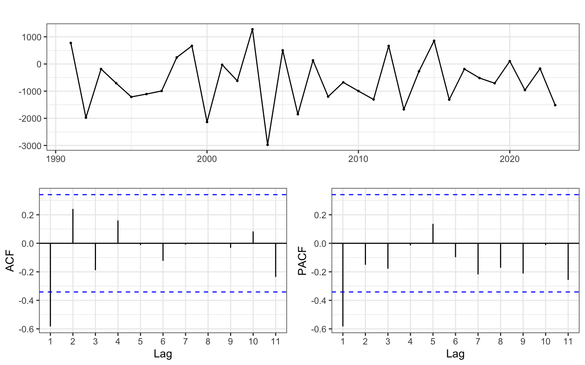
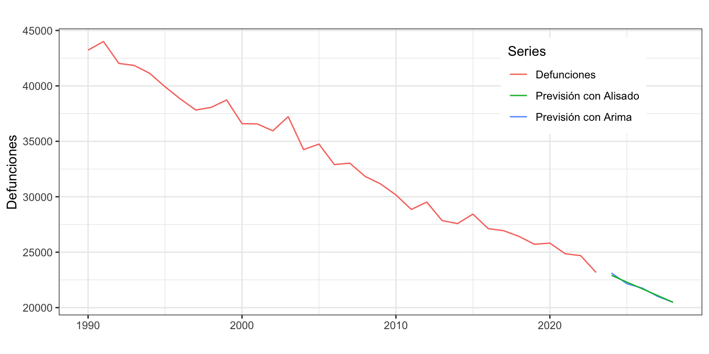

Iván Arribas (Depto. Análisis Económico. Universitat de València)
1 Introducción
Consideremos de nuevo la serie temporal correspondiente al número de defunciones causadas por enfermedades cerebrovasculares, Esta serie está disponible en el Instituto Nacional de Estadística desde enero de 1980 hasta diciembre de 2021, un total de 42 años o 504 meses
En la descriptiva vimos que la descomposición revelaba la presencia de varios valores atípicos concentrados al inicio de la serie. Por este motivo, para su análisis por modelos ARIMA vamos a recortar la serie, que empezará el enero de 1990, y a anualizarla (32 años). La Figura 1 muestra la serie a analizar.
Figura 1: Defunciones anuales causadas por enfermedades cerebrovasculares
2 Transformación de la serie
En el análisis previo se vio que la serie anual hay que diferenciarla una vez para que sea estacionaria. Por tanto, se opta por considerar \(d=1\) o \(DefEnfCer \sim I(1)\).
Para series anuales la transformación logarítmica no suele ser necesaria.
3 Identificación
Veamos ahora a identificar los valores de \(p\) y \(q\) a partir de la FAC y la FACP (Figura 2). Difícil decidirse entre un AR(1), un MA(1) o incluso un ARMA(1, 1).
ggtsdisplay(diff(DefEnfCer))

Figura 2: Defunciones anuales por enfermedades cerebrovasculares, FAC y FACP de la serie transformada
¿Qué recomienda auto.arima? Un ARIMA(1, 1, 0) con deriva.
Shapiro-Wilk normality test
data: error
W = 0.92102, p-value = 0.02216
Las hipótesis de incorrelación y homocedasticidad se aceptan (también se aceptan para otros valores de lag razonables). La hipótesis de normalidad se rechaza al 5%, pero se aceptaría al 1%.
5 Interpretación del modelo
El modelo teórico es \(DefEnfCer \sim ARIMA(1,1,0)\) + constante: \[(1 - \phi_1L)(1 - L) DefEnfCer_t = c + \varepsilon_t.\]
Finalmente. el modelo estimado es (recuerda que la constante estimada \(\mu\) no es la constante del modelo \(c\)):
\[\widehat{DefEnfCer}_t = -972.08 + DefEnfCer_{t-1} - 0.607(DefEnfCer_{t-1} - DefEnfCer_{t-2}) + \varepsilon_t\] Cada año el número de defunciones por enfermedades cerebrovasculares es el mismo que el año previo, menos 972 casos y menos un 61% de la última variación.
6 Predicción
Podemos usar el modelo estimado para predecir los casos de defunciones por enfermedad cerebrovascular para los próximos 5 años (Figura 4).
parima110 <-forecast(arima110, h =5, level =95)parima110
Point Forecast Lo 95 Hi 95
2022 24467.70 22893.40 26042.01
2023 23732.40 22040.68 25424.11
2024 23206.39 21133.08 25279.71
2025 22553.42 20313.71 24793.12
2026 21977.47 19499.43 24455.51
Figura 4: Defunciones por enfermedades cerebrovasculares y predicción
7 Calidad de las previsiones extramuestrales según horizonte temporal
Vamos a aplicar la metodología de origen de predicción móvil a la serie. Asumimos que se precisan veinte años para hacer una buena estimación, \(k=20\), y que el horizonte temporal es cinco años, \(h = 5\).
k <-20h <-5TT <-length(DefEnfCer) s <- TT-k-h mapeArima <-matrix(NA, s +1, h)for (i in0:s) { train.set <-subset(DefEnfCer, start = i +1, end = i + k) test.set <-subset(DefEnfCer, start = i + k +1, end = i + k + h) fit <-Arima(train.set, order =c(1, 1, 0),include.constant =TRUE) fcast<-forecast(fit, h = h) mapeArima[i +1,] <-100*abs(test.set - fcast$mean)/test.set}errorArima <-colMeans(mapeArima)errorArima
[1] 1.947756 2.232060 2.477713 3.370750 4.101925
Se observa que: i) el error de ajuste (predicción intramuestral a un periodo vista) del 1.7% es algo inferior al extramuestral del 1.9%; ii) conforme aumenta el horizonte temporal de previsión el error aumenta aunque a cinco años vista se mantiene aun bajo.
8 Comparación con un modelo de Alisado
Si estimamos la serie anual de Defunciones por enfermedades cerebrovasculares aplicando técnicas de alisado exponencial nos encontramos con un modelo con error y pendiente aditivas ETS(A,A,N).
summary(alisado <-ets(DefEnfCer))
ETS(A,A,N)
Call:
ets(y = DefEnfCer)
Smoothing parameters:
alpha = 0.3288
beta = 1e-04
Initial states:
l = 44274.1326
b = -608.9045
sigma: 821.8204
AIC AICc BIC
546.1679 548.4756 553.4966
Training set error measures:
ME RMSE MAE MPE MAPE MASE
Training set -7.527241 768.7426 621.5937 0.02313708 1.871303 0.6689139
ACF1
Training set -0.09169644
La calidad del ajuste del modelo de alisado es algo inferior a la del modelo ARIMA: MAPE de 1.9% para el primero frente a 1.7% para el segundo; RMSE de 769 para el primero frente a 765 para el segundo. Sin embargo, si se aplica la metodología de origen de predicción móvil al modelo de alisado, los errores a uno, dos y tres periodos vista son mayores que los del modelo ARIMA, pero a cuatro y cinco periodos vista Alisado ofrece predicciones extramuestrales más precisas. Por ejemplo, a un periodo vista el error por Alisado es del 2.2% y con ARIMA del 1.9%, pero a cinco periodos vista estos errores pasan al 3.6% y 4.1%.
Finalmente, las predicciones realizadas con el modelo ARIMA están ligeramente por encima de las obtenidas con el modelo de Alisado.
palisado <-forecast(alisado, h =5)autoplot(DefEnfCer,series ="Defunciones",main="",xlab="", ylab="Defunciones") +autolayer(parima110$mean, series ="Previsión con Arima") +autolayer(palisado$mean, series ="Previsión con Alisado") +labs(colour ="Series") +theme(legend.position=c(0.8,0.8))

Figura 5: Defunciones Enf. Cerebrovasculares y previsión
En definitiva, para esta serie, que es corta y aparentemente sencilla, la aproximación por la metodología ARIMA no mejora sustancialmente el modelo de Alisado Exponencial, más fácil de obtener e interpretar.